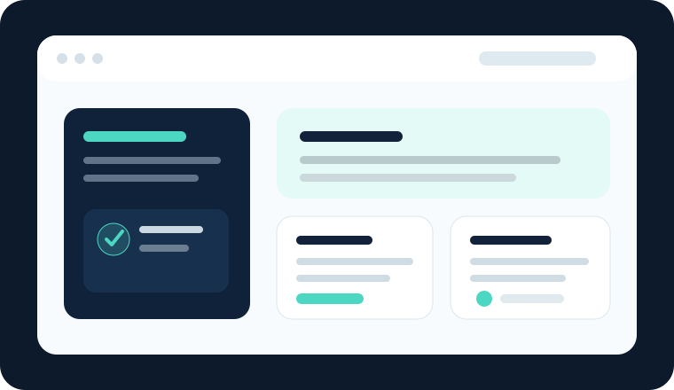

KI & Automatisierung
Integration von KI in bestehende Abläufe, intelligente Workflows, Automatisierung mit Python, Computer Vision und praxisnahe KI-Anwendungen.
Von der Konzeption und Entwicklung bis zur Bereitstellung, Dokumentation und Weiterentwicklung.

Sie sagen uns, was Sie brauchen. Design, Domain, E-Mail, Zahlungen und Technik übernehmen wir.
Wir entwickeln maßgeschneiderte Webanwendungen, intelligente KI-Lösungen und digitale Tools für Unternehmen, Forschungseinrichtungen und europäische Projekte.
Diese Leistungen bieten wir Unternehmen, Forschungseinrichtungen und öffentlichen Auftraggebern ebenso wie europäischen Projektkonsortien an.
Integration von KI in bestehende Abläufe, intelligente Workflows, Automatisierung mit Python, Computer Vision und praxisnahe KI-Anwendungen.
Professionelle Websites, Webanwendungen, individuelle Software, interaktive Plattformen und digitale Werkzeuge, wartbar aufgebaut und dokumentiert.
Datenaufbereitung, Dashboards, Reporting-Systeme, Datenvisualisierung und forschungsnahe Analysewerkzeuge.
Einschätzung von Softwarearchitekturen, Code-Reviews, Prüfung der Wartbarkeit, Teststrategien und Bewertung technischer Risiken.
Eigene Produkte, die wir entwickelt haben und die heute live betrieben werden. Anders als die Konzeptbeispiele weiter unten können Sie diese Anwendungen direkt ausprobieren.
KI-gestützte Bewegungsanalyse für Pferde: Aus einem Handyvideo entstehen Gelenkwinkel Bild für Bild und ein Bericht zur Gangasymmetrie. Als Web-App und Android-App verfügbar.
White-Label-Plattform für mehrsprachige, im eigenen Design gestaltete Lernspiele und Sichtbarkeitsseiten für EU-Projekte, veröffentlicht auf der eigenen Domain der Kunden.
Browserbasiertes 3D-Lernspiel zum Umweltschutz: Wer Abfall richtig trennt, bringt ein simuliertes Flussökosystem wieder ins Gleichgewicht.
Wir entwickeln konkrete digitale Outputs, von einzelnen Anwendungen bis zu zusammenhängenden Produktlösungen. Der Fokus liegt auf Konzeption, Entwicklung, technischer Umsetzung und zuverlässiger Übergabe.
Mehrsprachige Projektwebsites, Wissensplattformen, Portale, Mitgliederbereiche und interaktive Ressourcen.
Websites für EU-ProjekteNutzerorientierte Web- und Mobile-Apps, Prototypen, Dashboards und projektspezifische digitale Tools.
Lernspiele, Simulationen, Quiz-Systeme und spielerische Formate für Bildung, Forschung und Outreach.
Serious Games & Digital OutputsKI-Assistenten, intelligente Suche, Datenverarbeitung, Content-Workflows und praxisnahe Automatisierung.
Interaktive Publikationen, E-Learning-Inhalte, digitale Toolkits, Datenvisualisierungen und weitere Deliverables.
Hosting, Wartung, technische Dokumentation, Schulung und Weiterentwicklung über die Erstveröffentlichung hinaus.
Die folgenden Darstellungen zeigen ausgewählte Lösungs- und Konzeptbeispiele. Sie dienen als Portfolio-Illustrationen und werden später durch weitere abgeschlossene Arbeiten und Referenzen ergänzt.

Mehrsprachige Plattform mit Ressourcenbibliothek, E-Learning, Veranstaltungen und Partnerbereich.
Interaktives Lernspiel für Kompetenzentwicklung, Awareness, Simulationen und messbaren Lernfortschritt.
KI-gestützte Suche in Projektmaterialien sowie Unterstützung für Content-, Reporting- und Wissensprozesse.
Beschreiben Sie uns kurz Ihr Projekt, die benötigten digitalen Outputs, den gewünschten Zeitrahmen und den aktuellen Stand. Auf dieser Grundlage klären wir, welche Lösung sinnvoll ist und wie eine Zusammenarbeit aussehen kann.
Sie erhalten eine erste Einschätzung zu Umfang, technischer Machbarkeit, möglicher Umsetzung und den nächsten Schritten.
Gute digitale Outputs brauchen mehr als Code. Sie müssen zur Zielgruppe, zum Inhalt, zum Zeitplan, zum Budget und zur langfristigen Nutzung passen. Genau diese Verbindung bildet den Kern unserer Arbeit.
International Project Developer
PhD Researcher & AI/ML Engineer
Ob Webanwendung, KI-Lösung, Datenanalyse oder digitales EU-Projekt: Wir freuen uns auf Ihre Anfrage.